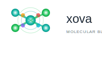

CURRENT CHOICE
üߨ DNA Helix + Smoothie
Double helix structure forming natural X pattern with nutrient nodes representing personalized ingredients.
✅ Pros
- Scientific credibility
- Natural X formation
- Perfect for personalization
- Unique in health space
❌ Cons
- Complex for small sizes
- May seem too scientific
üå™Ô∏è Dynamic Swirl / Blend Motion
Flowing swirl patterns creating X through blending motion, suggesting energy and ingredient fusion.
✅ Pros
- Shows movement/energy
- Directly relates to blending
- Dynamic and modern
- Great for motion graphics
❌ Cons
- Less unique concept
- Could look generic
üî∏ Minimalist Geometric
Clean, precise geometric X with corner accents and central circle for modern, tech-forward appeal.
✅ Pros
- Very scalable
- Modern and clean
- Easy to reproduce
- Professional look
❌ Cons
- Less personality
- Doesn't show health focus
ü•¨ Natural Elements / Organic
X formed by crossing branches with leaves and fruits, emphasizing natural, whole-food ingredients.
✅ Pros
- Natural, approachable
- Shows ingredient focus
- Warm and friendly
- Appeals to health-conscious
❌ Cons
- Common in health industry
- Less tech-forward
üí´ Tech-Forward / Digital Precision
Pixelated X with digital grid overlay, representing AI-powered personalization and precision.
✅ Pros
- Shows AI/tech aspect
- Modern and innovative
- Unique visual style
- Perfect for app icon
❌ Cons
- May feel cold
- Less natural/health appeal
⚛️ Molecular Structure
Atoms connected by bonds forming X pattern, with electron orbits showing scientific precision.

✅ Pros
- Scientific authority
- Shows molecular nutrition
- Educational appeal
- Unique concept
❌ Cons
- Complex structure
- May be too academic
üßò Wellness Circle / Holistic Health
X within wellness circle with mind-body-spirit-energy elements, emphasizing holistic health.
✅ Pros
- Holistic wellness focus
- Balanced and harmonious
- Appeals to wellness market
- Spiritual connection
❌ Cons
- Common in wellness space
- Less tech differentiation
üéØ Recommendation
The DNA Helix concept perfectly captures Xova's unique value proposition:
personalized nutrition optimized at the molecular level. It's scientifically credible,
naturally forms the "X" brand mark, and differentiates from typical health/smoothie logos.